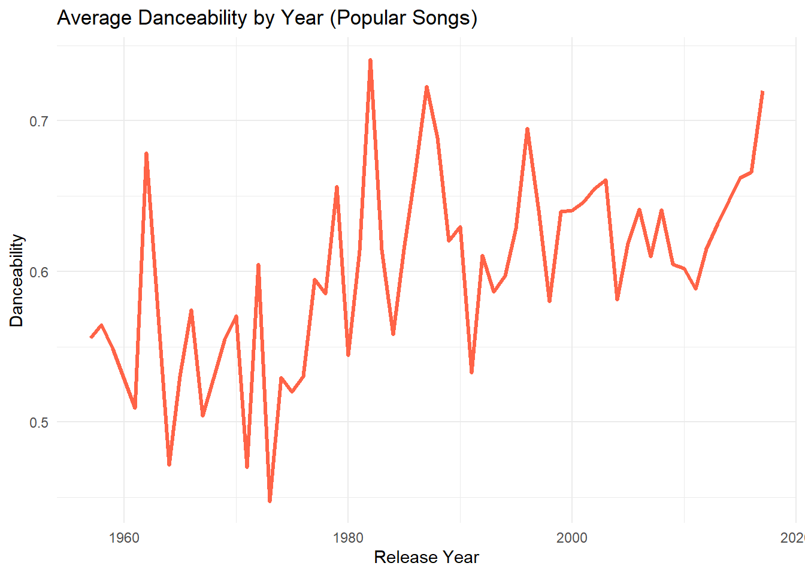
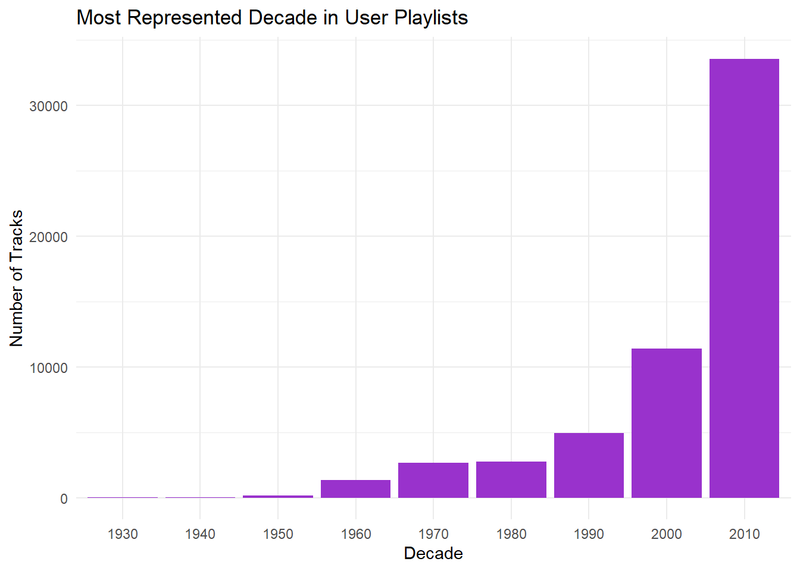
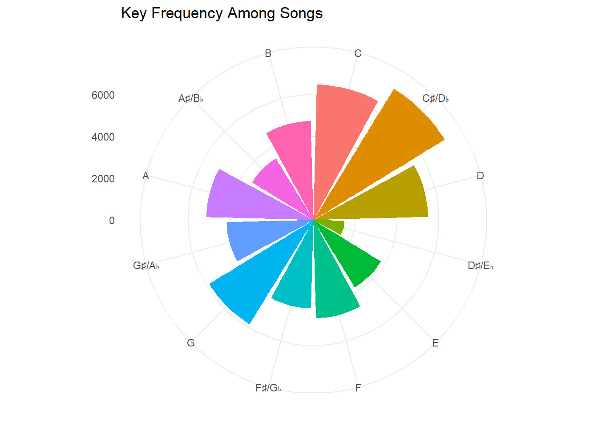
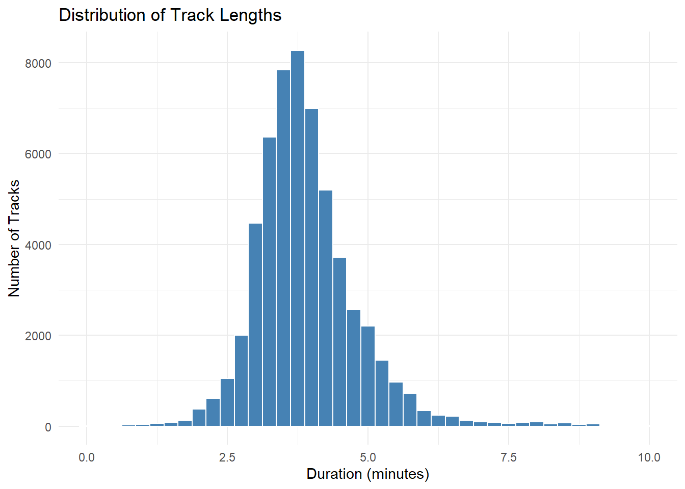
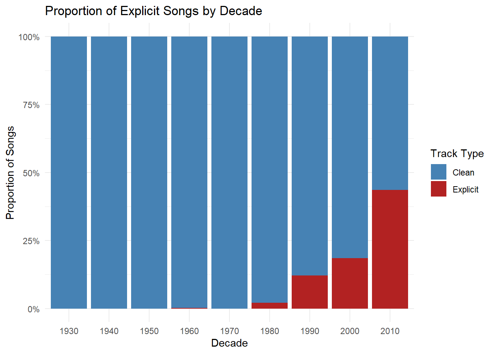
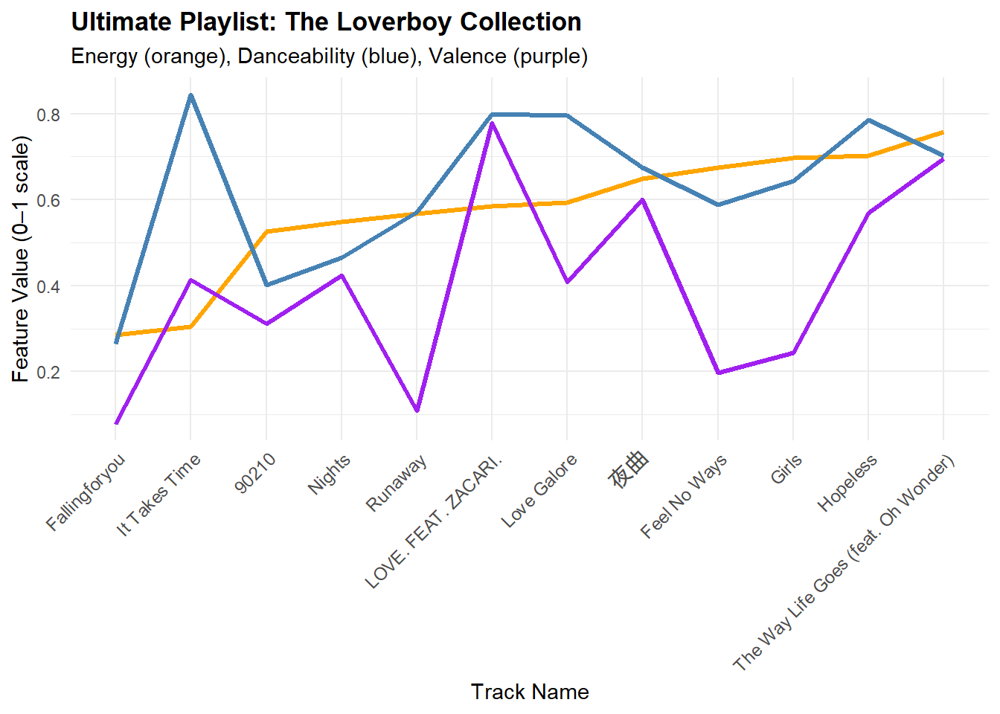

The Loverboy Playlist is 12 carefully curated tracks meant to represent the journey of love and heartbreak, capturing the highs and lows of it all. Whether you are mending a broken heart or yearning for that feeling of love, this playlist will allow you to let all your emotions out and find comfort in knowing that everything will be okay in the end.
Design Principles
Heuristics: I decided to use my favorite song as the anchor for this analysis, it being The Way Life Goes (feat. Oh Wonder) by Lil Uzi Vert. The songs were selected using basic heuristics such as shared playlist appearances, similar keys and tempos, same artist, same year with similar audio, and similar valence.
Narrative: Every song contributes to the emotional theme of love, loss, and growth. As the energy of the songs ramp up, so does the emotions, inviting listeners to feel vulnerable and accept all the good and bad that comes with being in love.
Hidden Gems: Among the 12 tracks, at least 5 are considered “not popular” (Spotify Popularity < 70), with hopes to highlight lesser known tracks. Through analysis I have also discovered 2 new tracks that I added to the playlist that conveyed the similar feelings.
# A tibble: 1 × 2
year avg_danceability
<dbl> <dbl>
1 1982 0.741
Code
popular_songs |>group_by(year) |>summarise(avg_danceability =mean(danceability, na.rm =TRUE)) |>ggplot(aes(x = year, y = avg_danceability)) +geom_line(color ="tomato", size =1.2) +labs(title ="Average Danceability by Year (Popular Songs)",x ="Release Year",y ="Danceability" ) +theme_minimal()

From the graph, we can see that the average danceabiliy of each year changes drastically every year, with the peak year of average danceability being 1982.
Code
combined_df |>filter(!is.na(year)) |>mutate(decade = (year %/%10) *10) |>count(decade) |>ggplot(aes(x =factor(decade), y = n)) +geom_col(fill ="darkorchid") +labs(title ="Most Represented Decade in User Playlists",x ="Decade",y ="Number of Tracks" ) +theme_minimal()

We are able to see that the most represented decade in users playlists are in the 2010s to 2020, with users clearly not leaning towards adding older songs into their playlists.
Code
key_labels <-c("C", "C♯/D♭", "D", "D♯/E♭", "E", "F", "F♯/G♭", "G", "G♯/A♭", "A", "A♯/B♭", "B")combined_df |>filter(!is.na(key)) |>count(key) |>mutate(key_label =factor(key_labels[key +1], levels = key_labels)) |>ggplot(aes(x = key_label, y = n, fill = key_label)) +geom_col(show.legend =FALSE) +coord_polar() +labs(title ="Key Frequency Among Songs",x =NULL, y =NULL ) +theme_minimal()

Since every song has different keys, I decided to look at all of them and we are able to see that C♯/D♭ is the most common key in songs.
Code
combined_df |>mutate(duration_min = duration /60000) |>ggplot(aes(x = duration_min)) +geom_histogram(binwidth =0.25, fill ="steelblue", color ="white") +coord_cartesian(xlim =c(0, 10)) +labs(title ="Distribution of Track Lengths",x ="Duration (minutes)",y ="Number of Tracks" ) +theme_minimal()

From the graph, we are able to see that the graph is bell shaped, with majority of songs being between 2.5-5 minutes long.
For my first exploratory question, I was curious if explicit songs have an effect on how popular a song is, and from the graph we are able to see that explicit songs are slightly more popular than clean songs.
Code
explicit_by_decade <- combined_df |>filter(!is.na(year)) |>mutate(decade = (year %/%10) *10,explicit =ifelse(explicit ==1, "Explicit", "Clean") ) |>count(decade, explicit)ggplot(explicit_by_decade, aes(x =factor(decade), y = n, fill = explicit)) +geom_col(position ="fill") +# Use "fill" for proportions, "stack" for raw countsscale_y_continuous(labels = scales::percent) +scale_fill_manual(values =c("Clean"="steelblue", "Explicit"="firebrick")) +labs(title ="Proportion of Explicit Songs by Decade",x ="Decade",y ="Proportion of Songs",fill ="Track Type" ) +theme_minimal()

I wanted to see the difference between the amount of songs from each decade that were explicit or clean, with explicit songs only becoming poopular around the 90’s and now almost half the songs on playlists are explicit, showing how artists are evolving over time.
Building The Loverboy Playlist
With the anchor song being The Way Life Goes, from the combined dataset I was able to gather data on the songs in the same playlist, songs in the same key and tempo, songs from the same artist, and songs from the same year with similar audio. From there, I was able to look through each dataset and choose songs from each of them, giving me a diverse yet similar array of songs to choose to make my ultimate playlist.
Code
anchor_tracks <- combined_df |>filter(track_name =="The Way Life Goes (feat. Oh Wonder)", artist_name =="Lil Uzi Vert")same_playlist_songs <- combined_df |>filter(playlist_id %in% anchor_tracks$playlist_id) |>filter(track_id != anchor_tracks$track_id[1]) |>distinct(track_id, track_name, artist_name, .keep_all =TRUE)same_playlist_songs |>select(track_name, artist_name, playlist_name) |>datatable(caption ="Songs from the Same Playlist as the Anchor Track",options =list(pageLength =10, scrollX =TRUE) )
Code
same_key_tempo <- combined_df |>filter(key == anchor_tracks$key[1]) |>filter(abs(tempo - anchor_tracks$tempo[1]) <=5) |>filter(track_id != anchor_tracks$track_id[1]) |>distinct(track_id, track_name, artist_name, .keep_all =TRUE)same_key_tempo |>select(track_name, artist_name, key, tempo) |>datatable(caption ="Songs with the Same Key and Similar Tempo",options =list(pageLength =10, scrollX =TRUE) )
Code
same_artist <- combined_df |>filter(artist_name == anchor_tracks$artist_name[1]) |>filter(track_id != anchor_tracks$track_id[1]) |>distinct(track_id, track_name, .keep_all =TRUE)same_artist |>select(track_name, artist_name, album_name, year, popularity) |>datatable(caption ="Songs by the Same Artist as the Anchor Track",options =list(pageLength =10, scrollX =TRUE) )
Code
same_year_similar_audio <- combined_df |>filter(year == anchor_tracks$year[1]) |>filter(abs(danceability - anchor_tracks$danceability[1]) <=0.1,abs(energy - anchor_tracks$energy[1]) <=0.1,abs(acousticness - anchor_tracks$acousticness[1]) <=0.1 ) |>filter(track_id != anchor_tracks$track_id[1]) |>distinct(track_id, track_name, artist_name, .keep_all =TRUE)same_year_similar_audio |>select(track_name, artist_name, year, danceability, energy, acousticness) |>datatable(caption ="Songs from the Same Year with Similar Audio Features",options =list(pageLength =10, scrollX =TRUE) )
The Ultimate Playlist
After looking through all the songs with similar artists, playlists, tempos and more, I finally created my ultimate playlist and analyzed the energy, danceability, and valence of the tracks with a focus on the energy because I wanted it to progress throughout the playlist, gradually building emotion and in the end end making the listener feel empowered.
ggplot(final_playlist, aes(x = track_name)) +geom_line(aes(y = energy), color ="orange", size =1.2, group =1) +geom_line(aes(y = danceability), color ="steelblue", size =1.2, group =1) +geom_line(aes(y = valence), color ="purple", size =1.2, group =1) +labs(title ="Ultimate Playlist: The Loverboy Collection",subtitle ="Energy (orange), Danceability (blue), Valence (purple)",x ="Track Name",y ="Feature Value (0–1 scale)" ) +theme_minimal() +theme(axis.text.x =element_text(angle =45, hjust =1, size =9),plot.title =element_text(face ="bold") )

Footnotes
Ching-Wei Chen, Paul Lamere, Markus Schedl, and Hamed Zamani. Recsys Challenge 2018: Automatic Music Playlist Continuation. In Proceedings of the 12th ACM Conference on Recommender Systems (RecSys ’18), 2018.↩︎